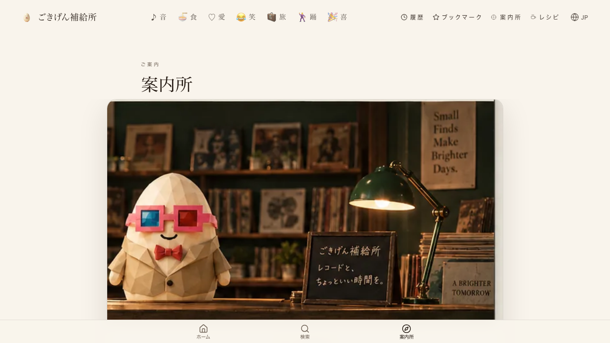
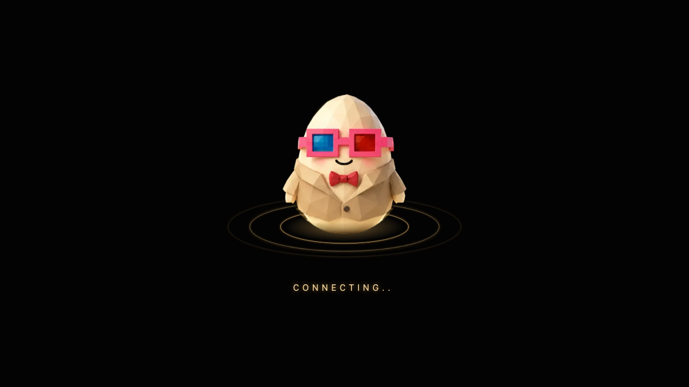
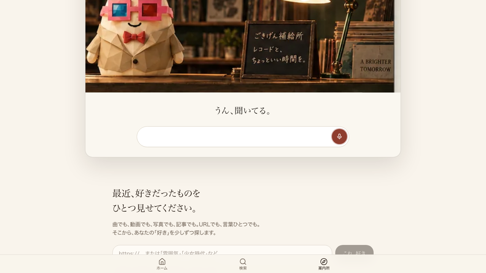

← 進捗表に戻る
共有資料の一覧
／ 確認ページ #2187 「つないでいます…」ボタンが戻らない問題
#2187 「つないでいます…」ボタンが戻らない問題
2026-10-20 実装・main合流・本番(GitHub Pages)反映まで実測確認
卵コンシェルジュ（案内所トップ /cover-guide の「声で話す」）で、接続がハング（応答が一切返らない）した場合でも、画面いっぱいのCONNECTING...表示が自動で消え、ブラウザの耳（ローカル音声認識）へ切り替わって会話を続けられることを、本番サイトへの実操作で確認した。コード修正は無し（既存の保険タイムアウトが本番で正しく動作していることの実証）。
② 数字
7.2秒
CONNECTING表示から自動復帰までの実測時間（2回平均・最大15秒設計の保険内）
2/2
接続を意図的に無限ハングさせた再現テストで、2回とも自動復帰
③ 実データでのスクリーンショット
①操作前（案内所トップ）

②「声で話す」を押し、接続を意図的にハングさせた直後

③約7秒後（自動復帰・固まっていない）

④ 押せるリンク
本番ページ（案内所トップ）
https://joy-relief-station.lovable.app/cover-guide
⑤ 何をどう確かめたか
確認項目
結果
CONNECTING...のフルスクリーン表示が出る
出た（画像2枚目）
接続がハングしたまま固まり続ける
固まらず7秒台で自動復帰
復帰後も会話を続けられる状態か
「うん、聞いてる。」でローカル音声認識へ切替済み
← 進捗表に戻る